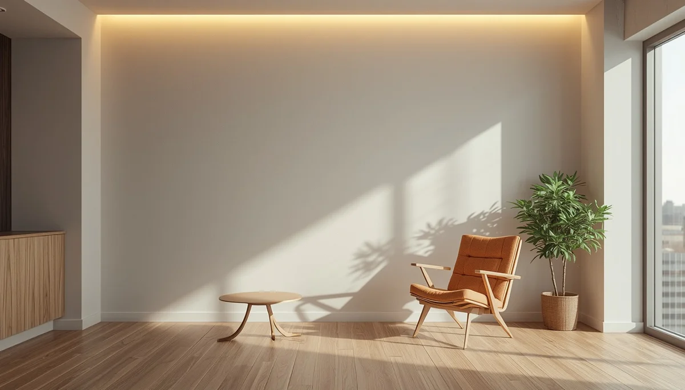

Comprender la maduración neurológica y motora
El camino que recorre un niño desde los primeros reflejos del nacimiento hasta el dominio absoluto de su cuerpo es un proceso fascinante guiado por el sistema nervioso. Cada movimiento, por pequeño que parezca, obedece a una compleja red neuronal en plena construcción. Comprender cómo se entrelazan la maduración cerebral y el tono muscular nos permite mirar el desarrollo infantil no como una carrera de marcas, sino como una conquista progresiva y orgánica.
El diálogo constante entre el cerebro y el cuerpo
Durante los primeros años de vida, el cerebro infantil recibe millones de estímulos sensoriales que procesa para organizar una respuesta motora adecuada. Sentir el suelo bajo las manos, percibir el propio peso al rodar o notar la resistencia de un objeto son experiencias que esculpen las conexiones cerebrales. Este intercambio constante entre la acción y la sensación es el verdadero motor que impulsa la coordinación y el equilibrio sin necesidad de intervenciones externas.
Respetar los tiempos biológicos de maduración
Cada sistema nervioso madura a su propia velocidad, influenciado por factores genéticos y ambientales. Pretender acelerar fases como el volteo, el gateo o la sedestación interrumpe un proceso que requiere solidez en sus cimientos. Al acoger el ritmo natural de cada menor, evitamos tensiones innecesarias y favorecemos una seguridad corporal que se mantendrá firme durante toda su vida.
"El desarrollo motor no se acelera; se sostiene, se acompaña y se confía, permitiendo que cada logro madure desde sus propios cimientos."
Una mirada paciente hacia la autonomía física
Saber observar la evolución neurológica con calma nos otorga la tranquilidad necesaria para ser guías respetuosos, dejando que el niño descubra de forma autónoma el potencial de su propio cuerpo.
➔ Volver al índice de Desarrollo psicomotor